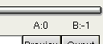

|
Cutting 1.Simple cutting A and B markers are used to set the start and end of a sequence.
You can set them using the You can also jump to A or B marker using Markers->Go to A or Markers->Go to B menu entries. Markers position is also recalled at the bottom of the screen. . The -1 means end of video. If you set markers video will be saved from A to B including B. That is [A,B]. The Markers->Delete menu entry will remove [A,B[ from the stream. It can be used, for example, to remove commercials from a video capture. You can remove as much as you want from the video stream. When removing parts, the audio inside the stream will keep sync, not an external audio. Said otherwise, be sure to cut a stream which always contains the audio.
This paragraph only applies when video is in copy mode. In process mode, avidemux internals ensure everything is allright. Most video codec use the previous frame as reference and only encode the delta. From time to time a complete frame is encoded with no temporal reference to other frames. These frames are Intra frame, also called I-Frame or KeyFrame. It means that if you have a stream like this : xxAxxIxxBxxxIxxx, and remove [A,B[, you will end up with xxOOOIxxxxx, with OOO being broken frames. Why broken ? Because they lost their reference frames. There is two ways of dealing with that :
Copy/Paste operations are also available, but the same restrictions concerning reference frame apply. In a nutshell : 2.Advanced cutting Using File ->Avi muxer options, you can specify a file size in megabytes. Each time that file size is reached and a I-frame is present, avidemux will create a new file. You will end up with foo.avi.1, foo.avi.2 etc... As the new file must begin by a I-frame, it is not very accurate. It is better to keep a margin of about 5 megabytes. You may also use Misc->cut wizard. Set the A marker before starting cut wizard. Enter the informations : Target filesize, # of audio track and bitrate of audio track (these are pre-filled). It will tell you where to set the B-marker to reach that size. It is a bit buggy. |
 and buttons.
and buttons.